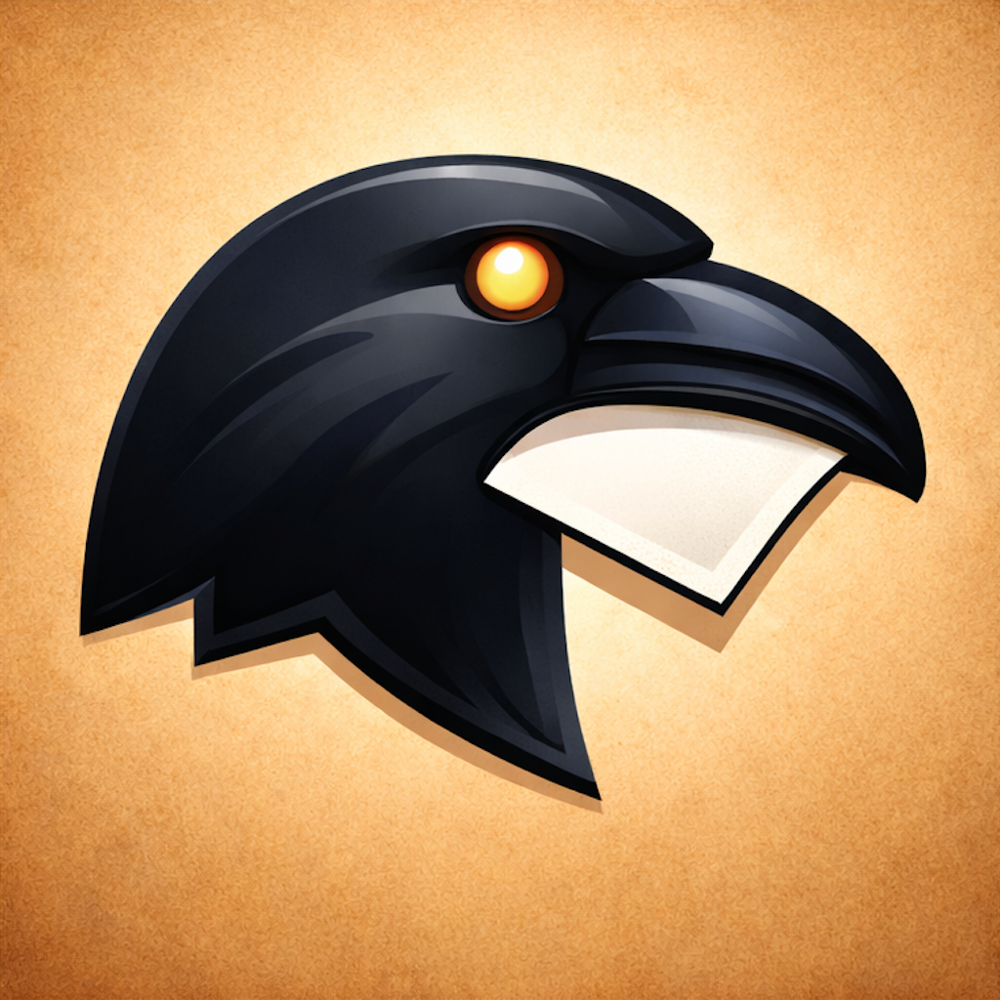

Your second memory.
Muninn remembers everything you copy.
Every piece of text, image, color, file, or PDF that passes through your clipboard is instantly captured and searchable — right from your menu bar.
Never lose something you copied. Muninn keeps a full, searchable history organized by content type and source app. See exactly which app each item came from, and filter by it instantly.
Keep your most-used text — email signatures, code blocks, addresses, boilerplate — one click away. Name them, reorder them, and access them from a floating Snippet Picker panel with Cmd+1–9 quick select.
Search your entire history by text, hex color value, or content type. OCR makes text inside images searchable. PDF text extraction makes documents searchable. QR and barcode detection makes codes searchable.
Every screenshot you take is instantly captured and ready to drag into any app. No extra steps.
Paste as rich text or strip formatting with plain-text paste. Apply text transforms — uppercase, lowercase, capitalize, trim whitespace — before pasting. Multi-select history items for bulk copy or delete.
Muninn detects sensitive clipboard content from password managers and can skip it entirely, mask it, or record it normally — your choice. Exclude specific apps or content types from being captured at all. All data stays on your Mac. Nothing is ever sent anywhere.
Full keyboard navigation throughout. Global hotkey to open from anywhere. Drag items directly out of the popover into any app.
Export your entire history, snippets, and settings to a single backup file. Import and merge or replace. Nothing is ever sent anywhere — all data stays on your Mac.
Automate Muninn with App Intents. Search history, copy snippets, and transform text from Shortcuts or Siri.
Requires macOS 14.0 or later. Free on the Mac App Store. Privacy policy.